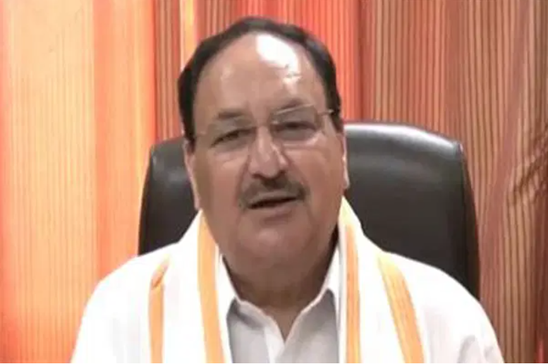

বিজেপি একাই ৩৭০টির বেশি আসনে জিতবে: জেপি নাড্ডাভারতের লোকসভা নির্বাচনে বিজেপি এককভাবে ৩৭০টির বেশি আসনে জিততে যাচ্ছে বলে দাবি করেছেন দলটির সভাপতি জেপি নাড্ডা। তাঁর দাবি, বিজেপি নেতৃত্বাধীন এনডিএ জোট চার শতাধিক আসনে জিতবে। জেপি নাড্ডা এক ভিডিও বার্তায় এ দাবি করেন। আজ শনিবার লোকসভা নির্বাচনের সর্বশেষ ধাপের ভোট গ্রহণ শেষ হয়। পরে ওই ভিডিও বার্তা দেন নাড্ডা। বিজেপি সভাপতি বলেন, যাঁরা তোষামোদি ও পরিবারতন্ত্রের রাজনীতি করে, দুর্নীতি করে, ভোটারেরা নির্বাচনে তাঁদের উপেক্ষা করেছে। বিজেপি ৩৭০টির বেশি আসন পাবে। আর বিজেপির নেতৃত্বাধীন জোট ন্যাশনাল ডেমোক্রেটিক অ্যালায়েন্স (এনডিএ) পাবে ৪০০ এর বেশি আসন। জেপি নাড্ডা বলেন, নির্বাচনের সর্বশেষ ধাপ শেষ হয়েছে। যথাযথ আয়োজনের মাধ্যমে সফলভাবে ভোট গ্রহণ শেষ করায় নির্বাচন কমিশনকে ধন্যবাদ। বিশ্বের বৃহত্তম গণতন্ত্রের এই দেশে নির্বাচন কমিশন কীভাবে ভোটগ্রহণ শেষ করল, তা দেখার মতো বিষয়। তিনি বলেন, ‘আমি কমিশনসংশ্লিষ্ট কয়েক লাখ নির্বাচন কর্মকর্তা-কর্মী ও নিরাপত্তাকর্মীদের ধন্যবাদ জানাই। ধন্যবাদ জানাই তাঁদের, যাঁরা তীব্র তাপপ্রবাহ উপেক্ষা করে ভোট দিয়েছেন, বিশেষ করে প্রথমবারের মতো যাঁরা ভোট দিয়েছেন।’ নির্বাচনী প্রচারণায় দিন-রাত পরিশ্রম করায় প্রধানমন্ত্রী নরেন্দ্র মোদি ও কেন্দ্রীয় স্বরাষ্ট্রমন্ত্রী অমিত শাহসহ বিজেপির শীর্ষ নেতাদেরও ধন্যবাদ জানিয়েছেন জেপি নাড্ডা। ভারতে এবারের লোকসভা নির্বাচন হয়েছে সাত দফায়। প্রথম দফায় ভোট হয়েছে ১৯ এপ্রিল। আজ শেষ ও সপ্তম দফায় ভোট হয়। আজ ভারতের সাত রাজ্য ও একটি কেন্দ্রশাসিত অঞ্চলের ৫৭ আসনে ভোট হয়েছে। ভারতের নির্বাচন কমিশনের (ইসিআই) তথ্যমতে, আজ ভোট পড়েছে ৫৮ দশমিক ৩ শতাংশ। আজ ভোট গ্রহণ শেষ হওয়ার পর থেকে বুথফেরত জরিপের ফল আসতে শুরু করেছে। প্রায় সব জরিপ বলছে, বিজেপিই ক্ষমতা আসছে। |